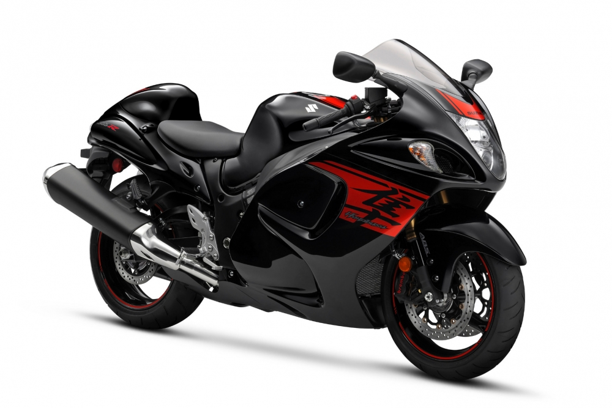
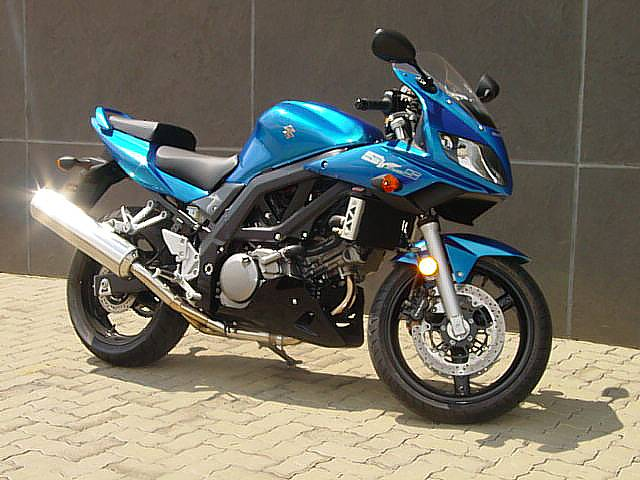

|

Suzuki GSX-R 1300 (Hayabusa)
Állapot: Kímélt
Típus: Sport/Gyorsasági Évjárat: 2013 Okmányok: Külföldi nélkül Műszaki adatok: Tovább a weboldalra Vételár: 4,405,000 Ft |
Suzuki Vitara
Állapot: Újszerű
Típus: Városi terepjáró Évjárat: 2017 Okmányok: Magyar okmányok Műszaki adatok: Tovább a weboldalra Vételár: 4,700,000 Ft |

Suzuki SV650
Állapot: Felújítást igényel
Típus: Sport-túra Évjárat: 2013 Okmányok: Magyar okmányok Műszaki adatok: Tovább a weboldalra Vételár: 1,000,000 Ft |